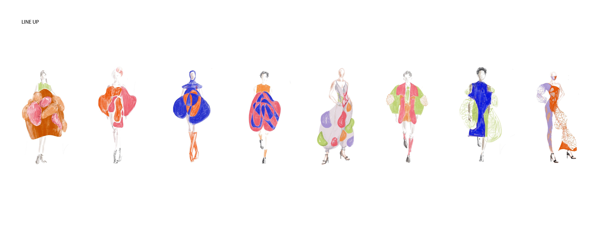
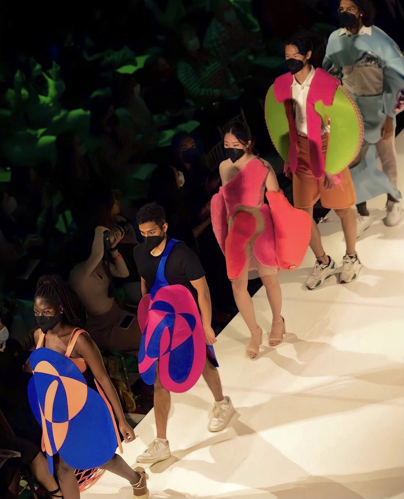

I designed and worked on a line for Lunar Gala Runway with my friends Gloria and Mai. The theme for our line is Monachoposis. The meaning of monachopsis is “the subtle but persistent feeling of being out of place, as maladapted to your surroundings as a seal on a beach….unable to recognize the ambient roar of your intended habitat”. As youth, we often find ourselves in between curiosity and confusion. There is a part of us that searches for many aspects in life that captures our interest, but oftentimes, getting caught in all these visions of yourself leads to a state of disorientation. The growth of youth includes the messy discovery of self image, where at one point it almost becomes unrecognizable. However as we continue to evolve between the juxtaposition of curiosity and confusion, there comes a point where we finally come to an acceptance of ourselves in a unity through the morphing of different identities. Monachopsis also speaks to the struggle with body image, seeing yourself in a distorted dimension than your true body.
The series takes on a three-dimensional and sculptural approach, inspired by fluidity and the morphing of spheroid geometries. These irregularities of form that often appear in unexpected places of the silhouette represent the multitude of youth's character but also an unfamiliarity with one's self image. As the model moves, the dramatic shapes create a peculiar yet dynamic movement as they clash into each other. The morphing is portrayed first through addition (stuffed bubbles and the stitching technique) then subtraction (negative space and nets). As the line evolves, the model slowly reveals its figure and becomes more transparent and unified with their clothing, representing a growth of learning to embrace all shapes and forms of their personality, body, and passions. We have also selected a series of vibrant colors to express the vitality of youth, with mainly complimentary colors to portray the polarity of identities and a diversity of thoughts.


Here's the complete line up!
The sewing took months. All of us were new to making clothes. The sewing and pattern making process took us so long and we even at one point considered super-glueing everything together 😵. Luckily we were able to finish everything on time and the sewing process was a great learning experience for all of us.
We had to hand-tuft a lot of the fabric to get the effect we were looking for.
Trying out the pieces on the models was so so exciting & fulfilling!
We tried out a lot of different laser-cutted patterns....

After months of designing, tufting, sewing, rehearsing, we fiinished the whole line on time!! The show was so much fun and I'm so glad I am greatly gracious for all my friends who came to the show, and the models who performed our designs!!
The line up!
